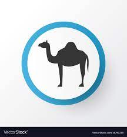

Western desert
The Western Desert of Egypt is an area of the Sahara that lies west of the river Nile.
AI Bagawat
It is one of the earliest and best preserved Christian cemeteries from the ancient world.
Pyramid of the giza
It is the oldest of the Seven Wonders of the Ancient World, and the only one to remain largely intact.
Kalahari Desert
The Kalahari Desert is a large semi-arid sandy savannah in Southern Africa extending for 900,000 square kilometres
SAHARA
The Sahara 'the Greatest Desert' is a desert on the African continent. With an area of 9,200,000 square kilometres (3,600,000 sq mi), it is the largest hot desert in the world and the third largest desert overall, smaller only than the deserts of Antarctica and the northern Arctic.
The name "Sahara" is derived from the Arabic word for "desert" in the feminine irregular form, the singular ṣaḥra'